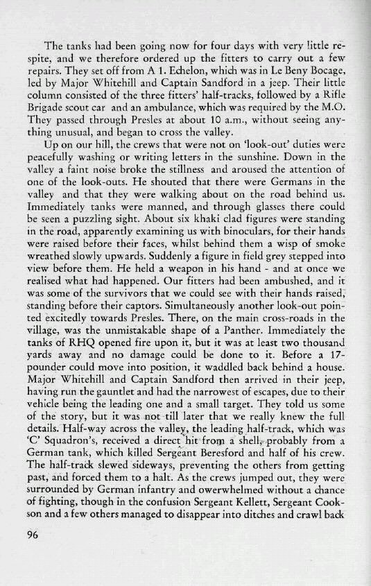

You are here:
Home
>
The Story of the Twenty-Third Hussars
> Page 96
< Prev
Next >

Men
Hugh Stuart Whitehill
John William George Sandford
George Henry Beresford
Harold Kellett
Leslie G Cookson
Locations
Le Beny Bocage
Presles
Notes
A more detailed account of the convoy's ambush
is here
.
< Prev
Next >